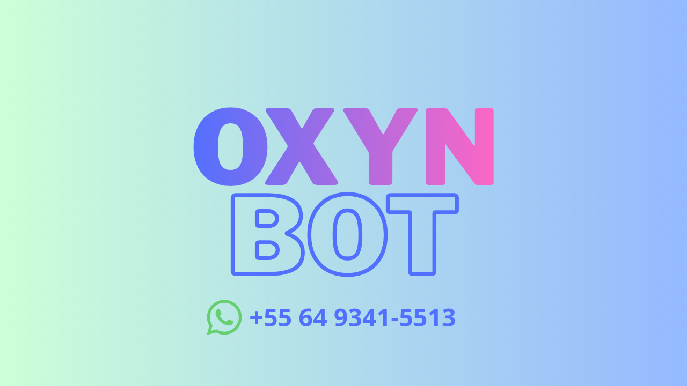

Coloque o bot Oxyn Bot no seu grupo!

Tutorial de Instalação
╔═══════❖•ೋ° 🤖 TUTORIAL °ೋ•❖═══════╗ 🤖 COMO ADICIONAR O 🔵 𝙤𝙭𝙮𝙣 𝘽𝙊𝙏 𝘽𝙀𝙏𝘼 🔵 NO SEU GRUPO 🔵 PASSO 1: Salve o número +55 64 9341-5513 🔵 PASSO 2: Vá ao seu grupo. 🔵 PASSO 3: Clique no nome do grupo. 🔵 PASSO 4: "Adicionar participantes". 🔵 PASSO 5: Procure por Oxyn Bot. 🔵 PASSO 6: Adicione o bot. 🔵 PASSO 7: Envie /menu no chat. ✅ PRONTO! Funcionando. ━━━━━━━━━━━━━━━━━━━━ 🔵 GRUPO OFICIAL: www.chat.whatsapp.com/I7kemYsk4pY0O5Dzg4gdxh ╚═══════❖•ೋ° 🔵 OXYN SYSTEM °ೋ•❖═══════╝